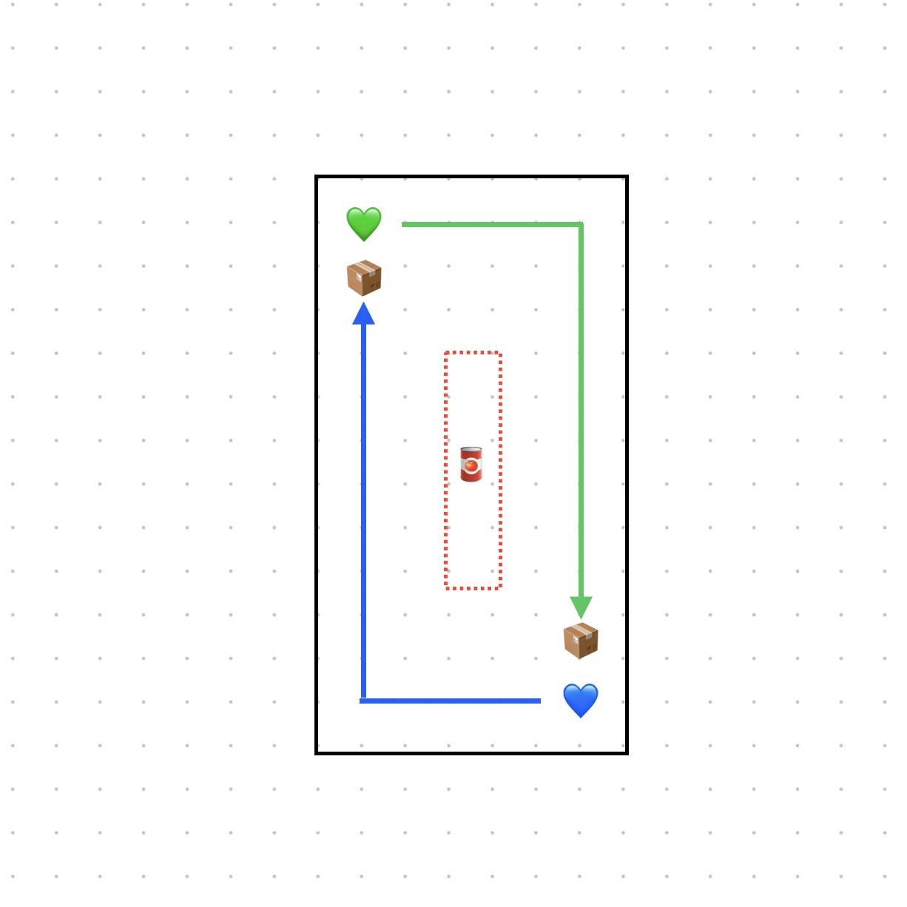
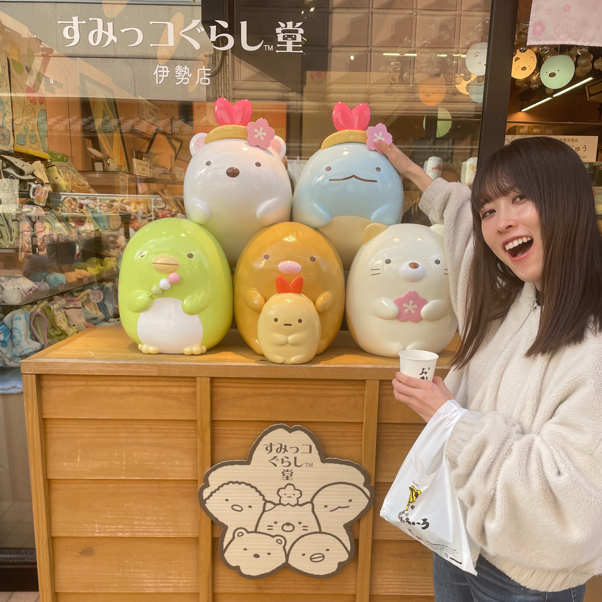

ルール/遊び方

それぞれ♡の位置から機体を動かし、フィールド中央部の空き缶を取る。さらに機体の進路方向にある箱に空き缶を投入することができればポイントを得ることができる。
空き缶を1つ箱に入れるごとに1pt、先に3pt先取すれば勝利！！
空き缶を相手の進路に置くことで、進路妨害が可能。スピード全開でポイント全取りを狙うか、相手の邪魔をしポイントの獲得を阻むか。戦略性とプログラミング能力が試されます！
あとがき

あめちゃんです！主に体験会のメンターさんをしています！
本制作では競技設計、あめちゃん号の制作、フィールド制作、
今みなさんが見ているこのHP制作を担当しました！
ゼロワングランドスラムで見たロボット競技に感動して、
あめちゃんも作ってみたい！テックキッズのみんなに面白さを知ってほしい！と思い制作を始めました。
ロボコン出場経験のあるおっきーの全面協力のもと、あめちゃんの野望を形にすることができました！ありがとう！
scratchを触ったことがある人であれば、簡単にロボットのコードを変更できるようにしてあります。
色々といじってみて、ロボットが思い通りに動く感動を、ぜひ体感してみてくださいっ！！